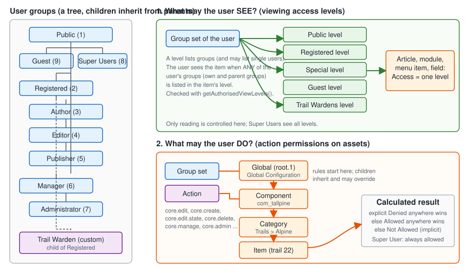

Joomla Users, Groups, Access Levels and ACL
|
This content was generated with the assistance of AI and should be verified against the official documentation before being relied on in production. |
Every Joomla site answers two different questions about every visitor, and almost every access-control mistake comes from mixing them up: what may this person see? and what may this person do? The first is answered by viewing access levels. The second is answered by action permissions stored on assets. Both start from the same place, the user’s groups. This page was checked on 2026-10-30 against Joomla 6.2.x and PHP 8.3 or later, and the behaviour described is the same on the security-only 5.x line unless a version note says otherwise.
It covers the screens used by an administrator and a site builder (Users, Groups, Access Levels, Users: Options, User Notes, Mass Mail), the permission calculator, how rules are stored and evaluated internally, the registration and activation flow, user custom fields, and the security consequences of each setting. It then walks through the running example of the Tallpine Hiking Club, which adds a custom Trail Warden group and a Trail Wardens access level for member-only trail conditions. Developers who need to add permissions to their own component continue in ACL in extensions.
The two questions: seeing and doing
| Viewing access levels | Action permissions | |
|---|---|---|
Question |
May this user see (read) this article, module, menu item, field or category? |
May this user do this action (create, edit, delete, publish, manage, configure) here? |
Stored in |
Table |
Column |
Screens |
Users → Access Levels, and the Access field of every item. |
System → Global Configuration → Permissions, the Permissions tab of a component’s Options, of a category and of an item. |
Granularity |
One level per item. Levels are not hierarchical. |
Per action, per group, inherited down the asset tree. |
Resolved by |
|
|
Enforced by |
Models and queries that filter on |
Controllers, models and toolbars that call |
The official Developer Manual states the split as "access" (what users are able to see) and "permissions" (what users are able to do), and adds that Joomla does not enforce either automatically: an extension has to apply the checks itself.

Source: Joomla Manual: ACL
Users
The Users screens
Users → Manage lists the accounts of the site. The list can be filtered by state (enabled or blocked), active or not
(activation), group, last-visit range and registration range, and searched by name, username or email. Prefixing the
search with id: finds one user by id. The columns show the name, username, enabled and activated state, the assigned
groups, the email address, the last visit date, the registration date and the id.
The toolbar of the list has New, Actions (Activate, Block, Unblock, Delete, and Batch), and Options. Blocking an
account is the recommended way to disable a person: the User Guide advises blocking rather than deleting, because a deleted
account removes the group mappings in #__user_usergroup_map and the user’s private messages, while content the user
created keeps the old user id as its author.
The Batch dialog can add users to a group, delete them from a group, set them to a single group, and require a password reset at next login. Use it for bulk onboarding of a club season: select the 40 renewed members and add them to Registered, or require a reset after a suspected credential leak.
Editing a user
The user edit form (Users → Manage → New or the user’s name) has these tabs:
| Tab | What it holds |
|---|---|
Account Details |
Name, login name, password and confirmation, email address, Receive System Emails (stored as |
Assigned User Groups |
One check box per group. A user may belong to several groups. By default a new user is placed in the group chosen in Users: Options (normally Registered). |
Basic Settings |
Per-user preferences kept in the |
Multi-factor Authentication |
The methods the user has set up. See Security hardening, MFA and passkeys. |
User Profile |
Present only when the User - Profile plugin is enabled. It adds address, telephone, website and similar fields. |
Custom field tabs |
One tab (or the main tab) per field group assigned to the user context. See User custom fields. |
The Assigned User Groups tab has a rule that matters for delegation: an Administrator cannot make anyone, including themselves, a Super User. Only a Super User can create or promote Super Users. The User Guide’s page on changing a user’s group also notes that, thanks to inheritance, you normally need to assign only the single group carrying the most privileges the person needs.
Where users live
| Table | Purpose |
|---|---|
|
One row per account: |
|
Primary key ( |
|
The group tree as a nested set ( |
|
User notes, see User notes. |
|
The values of custom fields in the user context. |
Source: Joomla Manual: User
Groups and inheritance
The nine default groups
A fresh Joomla installation creates nine groups. They form a tree: a child group inherits everything granted to its parent, and a user in a child group counts as a member of all of its ancestor groups for both viewing and permissions.
| Id | Group | Parent | Purpose |
|---|---|---|---|
1 |
Public |
none |
The root of the tree. Everything granted to Public applies to everybody. It has no action permissions by default. |
9 |
Guest |
Public |
The group given to visitors who are not logged in. |
2 |
Registered |
Public |
Logged-in site members. Allowed Site Login. |
3 |
Author |
Registered |
Front-end authors: Create and Edit Own content. |
4 |
Editor |
Author |
Edit all content, including content by others. |
5 |
Publisher |
Editor |
Edit State: publish, unpublish, trash and archive. |
6 |
Manager |
Public |
Back-end role: Administrator Login and Access Administration Interface for most components. |
7 |
Administrator |
Manager |
Everything a Manager does, plus users, extensions and configuration of components. |
8 |
Super Users |
Public |
Not a child of Administrator. Holds the global Super User permission and therefore every permission. |
Two details trip people up. First, Guest is a real group (id 9) that exists only for the Guest access level, and
Super Users hangs directly under Public, so Super Users are not "Administrators plus more" in the tree: their power comes
from the core.admin permission, not from inheritance. Second, Author, Editor and Publisher are front-end roles. They do
not have Administrator Login, so they work through the front-end article edit forms. Manager and Administrator can use
both the front end and the back end.
The groups are ids because the stored rules refer to them by number. The ids above are those created by the installer; a site that has deleted or recreated groups has different numbers, so always read them from Users → Groups.
Inheritance in practice
Inheritance has three consequences:
-
A permission granted to Registered is automatically held by Author, Editor and Publisher, because each is a descendant.
-
A user needs only one group to collect the privileges of the whole chain above it. Putting a user in both Author and Registered adds nothing.
-
A Denied set on a parent group cannot be undone in a child group (see [the-permission-calculator]), so deny sparingly and near the leaves of the tree.
Users: Groups (Users → Groups) lists the groups with their member counts and a Users in group link. A group has only a Group Title and a Group Parent. Changing a group’s parent moves its subtree and changes the effective permissions of every member immediately. A user left without any group is treated as a member of Public. Deleting or reparenting the nine core groups breaks the assumptions of the default rules and of extensions, so create new groups instead.
Choosing a parent
When creating a custom group choose the parent that already has most of the permissions you want, and add only the
difference. The Tallpine Trail Warden group is a child of Registered: a warden is a member who can additionally read
the trail conditions area and edit the warden-notes field on trail reports, but who should not publish news.
Public (1)
Guest (9)
Registered (2)
Author (3) -> Editor (4) -> Publisher (5)
Trail Warden (10) <- custom, child of Registered
Manager (6) -> Administrator (7)
Super Users (8)The id 10 is what a fresh Tallpine installation receives; a site with other custom groups gets another number.
Viewing access levels
What a level is
A viewing access level is a named set of groups. Every article, category, module, menu item, contact, banner, custom field and similar item has an Access field that stores the id of one level. A user may view the item when any of the user’s groups, own or inherited, appears in that level. The Manual’s worked example: a user in groups A, C and D can see an item whose level lists A, D and E, because A and D match, and cannot see an item whose level lists only E.
| Level | Id | Groups | Typical use |
|---|---|---|---|
Public |
1 |
Public |
Everyone, including guests. The default for new items. |
Guest |
5 |
Guest |
Items shown only to visitors who are not logged in, such as the Login Form menu item. |
Registered |
2 |
Registered, Manager, Super Users |
Logged-in members. |
Special |
3 |
Author, Manager, Super Users |
Content for people who contribute: authors, editors and publishers (children of Author) and managers. |
Super Users |
6 |
Super Users |
Material only super users should see. |
The order in which the levels appear in the Access list is set by the Ordering column of Users → Access Levels, not alphabetically. The ids shown are those the installer creates; and the installer creates the levels with ids 1, 2, 3, 5 and 6.
Because groups are inherited, a level that lists Registered is also visible to Author, Editor and Publisher, and a level listing Manager is visible to Administrators. A level can also contain an individual user: the stored rule list may hold a negative number that is the negated user id. The screens do not offer this, but the resolution code honours it.
Creating the Trail Wardens level
-
Users → Groups → New: title Trail Warden, parent Registered, Save & Close.
-
Users → Access Levels → New: title Trail Wardens, tick Trail Warden, Manager and Administrator, Save & Close.
-
Open the module Trail conditions, set Access to Trail Wardens. Only wardens, managers and administrators see it.
-
Do the same for the menu item that leads to the member-only trail conditions page and for the articles themselves.
The ticks matter. A level contains exactly the groups you tick; being a descendant of a ticked group counts, being an ancestor does not. Because Trail Warden is a child of Registered, a warden also passes the Registered level. If you tick only Trail Warden, then a plain Registered member, an Author and an Editor will not see the trail conditions. Add the groups that should see them too, for example Publisher or Editor.
Super Users do not need to be ticked. The level calculation grants every level to a user whose groups hold core.admin
at the global level.
Guests, Public and the Guest group
A visitor who has not logged in has user id 0 and is assigned the group chosen in Users: Options → Guest User Group. If the option is empty the code falls back to Public. This is the reason the Guest level works only when that option points to the Guest group. If it points to Public, a visitor sees Public items and no Guest items; if it points to Registered (a configuration mistake seen in migrated sites), anonymous visitors see members-only content. Check this option first when the login menu item is missing for visitors or when content appears for people who have not logged in.
The User Guide’s guest access page sets a Login Form menu item to Guest so it disappears after login, and a Logout item to Registered so it appears only after login.
Source: Joomla User Guide: Guest Access
Levels in code
<?php
use Joomla\CMS\Factory;
$user = Factory::getApplication()->getIdentity();
$levels = $user->getAuthorisedViewLevels(); // list of level ids, not group ids
$canView = in_array((int) $item->access, $levels, true);Source: Joomla Manual: ACL access
In a database query use the same list instead of testing items one by one:
<?php
use Joomla\CMS\Factory;
use Joomla\Database\ParameterType;
$user = Factory::getApplication()->getIdentity();
$db = Factory::getContainer()->get('DatabaseDriver');
$query = $db->createQuery()
->select($db->quoteName(['id', 'title']))
->from($db->quoteName('#__content'))
->whereIn($db->quoteName('access'), $user->getAuthorisedViewLevels(), ParameterType::INTEGER);Source: Joomla Manual: ACL access
When the user may not see a single requested item, the convention is HTTP 403: a logged-in user gets 403, and a guest gets either 403 or a redirect to the login page with a message. A page of an extension that forgets the check leaks content even though its menu item is hidden, because hiding a menu item does not protect the URL behind it.
Action permissions
The actions
Permissions are named with the core. prefix. The list a site shows depends on the component, because each component
declares its own in access.xml. The global list is:
| Action | Label in the screen | Meaning |
|---|---|---|
|
Site Login |
May log in on the front end. |
|
Administrator Login |
May log in on the back end. |
|
API Login |
May authenticate against the Web Services API (see Web Services API). |
|
Offline Access |
May log in on the front end while the site is offline. |
|
Super User |
Everything. At component level, "Configure ACL & Options": all actions in that component, but not system-wide ones. |
|
Access Administration Interface |
May open the component’s back-end screens and perform lower-level tasks such as checking items in. |
|
Configure Options Only |
May change the component’s Options but not its permissions. |
|
Create |
May create items. |
|
Delete |
May delete items. |
|
Edit |
May edit any item. |
|
Edit State |
May publish, unpublish, archive and trash. |
|
Edit Own |
May edit items the user created. |
|
Edit Custom Field Value |
May change the value of a custom field (components that support fields). |
|
Execute Transition |
May run a workflow transition (see Workflows). |
core.login.api was added with the Web Services API in 4.0, and core.execute.transition with workflows in 4.0. The login
actions exist only at the global level. The component-specific ones, such as core.create for Contacts, appear on the
component’s own Permissions tab; categories, field groups and fields get a smaller set (for com_users: create, delete,
edit, edit state and edit own on categories; the same plus edit value on field groups; delete, edit, edit state and edit
value on fields).
core.edit.own does not check ownership by itself. It tells the code that the user may edit their own items, and the
component must still compare the item’s created_by with the user id. The Manual’s pattern is:
<?php
$canEditOwn = $user->authorise('core.edit.own', 'com_tallpine.trail.' . $trail->id)
&& (int) $trail->created_by === (int) $user->id;Source: Joomla Manual: ACL access
Global, component, category and item permissions
Every permission lives on an asset, and assets form a tree stored in #__assets as a nested set:
root.1 System -> Global Configuration -> Permissions
+-- com_tallpine com_tallpine -> Options -> Permissions
+-- com_tallpine.category.12 category "Trails > Alpine" -> Permissions tab
+-- com_tallpine.trail.22 the trail report itself -> Permissions tabSource: Joomla Manual: ACL permissions
For core content the chain is root.1, com_content, the category (and its parent categories), then
com_content.article.22. Each level offers the same table of groups and actions and starts from what the level above
decided.
| Level | Where to set it | Typical use |
|---|---|---|
Global |
System → Global Configuration → Permissions |
Site-wide defaults: who may log in, who is Administrator, base create and edit rights. |
Component |
Component Options → Permissions |
Different rights for one component, for example only Editors may create banners. |
Category |
Category edit → Permissions tab |
Rights inside one branch of content: members of a group may publish only in Trails > Alpine. |
Item |
The item’s edit form → Permissions tab |
An exception for one article, contact or module. |
The item-level tab appears only after the item has been saved once, because a new item has no asset yet. The tab shows "Please save before changing permissions" until then. Core modules, menu items and plugins have their own assets for the same reason.
How rules are stored
Each asset row has a rules column holding JSON. A key is an action, a nested key is a group id, and the value is 1
(Allowed) or 0 (Denied). A group with no entry is Inherited. The default com_content rules from the installer grant Administrator (7) core.admin, Manager (6) core.manage, Author (3) core.create, Editor (4) core.edit,
Publisher (5) core.edit.state, and Manager and Publisher core.execute.transition. The example below is illustrative and adds a deny.
{
"core.create": { "3": 1 },
"core.edit": { "4": 1 },
"core.edit.state": { "5": 1 },
"core.delete": { "2": 0 },
"core.execute.transition": { "6": 1, "5": 1 }
}Source: Joomla Manual: ACL permissions
The last two lines show the two kinds of entry: an allow for Manager and Publisher, and an explicit deny of delete for
every Registered member. The format is the one Joomla\CMS\Access\Rules parses and prints: top-level keys are action names,
nested keys are group ids (a negative number is a single user), and the nested values are booleans. The root asset
root.1 of a new installation carries, for example, core.login.site for Registered (2) and Manager (6), core.login.admin
for Manager (6), core.login.api for Super Users (8), core.admin for Super Users (8) and core.manage for Administrator
(7).
Inspect the stored rules read-only with SQL:
SELECT id, parent_id, level, name, rules
FROM `#__assets`
WHERE name IN ('root.1', 'com_content', 'com_tallpine')
OR name LIKE 'com_tallpine.trail.%'
ORDER BY lft;Source: Joomla Manual: ACL permissions
Do not edit rules by hand on a production site. The asset tree uses nested-set columns (lft, rgt) that must stay
consistent, and the permission screens recalculate and save them correctly. Reading is safe.
The permission calculator
When you open a Permissions tab, the form shows one row per action and one column per level of the tree below it. For each group the row shows a Select New Setting list and, next to it, the Calculated Setting.
The list offers three values:
| New setting | Meaning |
|---|---|
Inherited |
No entry is stored for this group and action here. The result comes from the parent group or the parent asset. |
Allowed |
An allow entry is stored. |
Denied |
A deny entry is stored. It overrides every allow for the same action, at this level and below, in this group and its children. |
The Calculated Setting column shows the final result for that group on that asset:
| Calculated setting | Meaning |
|---|---|
Not Allowed (Default) |
Global level only. Nothing was ever granted; the default is deny. |
Not Allowed (Inherited) |
Below the global level. No allow was found along the chain. |
Allowed (Inherited) |
An ancestor group or asset allows it and nothing denies it. |
Allowed |
An explicit allow is stored here. |
Not Allowed (Locked) |
A deny higher up cannot be overridden here. The select box is disabled. |
Allowed (Super User) |
The group holds |
Conflict |
The group is a Super User group while a deny is also stored for it; the setting is ambiguous until corrected. |
The rules the calculator follows are:
-
Collect the user’s identities: the user’s id (negated) and every group the user belongs to, together with all ancestor groups.
-
Collect the rules of the asset and of all its ancestor assets, from the root down to the item.
-
If any of those identities has an explicit deny for the action, in any collected rule set, the answer is no. An explicit deny wins.
-
Otherwise, if any identity has an explicit allow, the answer is yes.
-
Otherwise there is no matching entry, an implicit deny: the answer is no.
-
A user whose groups hold
core.adminat the root is always allowed, whatever else is stored.
The source of Rule::allow() confirms the order: it walks the identities, remembers a true, and returns false at
the first explicit false; if nothing matched it returns null, which Access::check() treats as a denial. The method
Access::getAssetRules($assetKey, true, true) merges the rules of the asset with its ancestors, and
Access::getGroupsByUser($userId, true) supplies the identity list, adding every ancestor group through the nested-set
lft and rgt bounds.
Reading the explicit deny rule in practice: an Allowed on the item for Editor does not help an Editor who also belongs to a group with a Denied on the component. The way out is never to override at the item; it is to remove or move the deny.
A worked example in the Tallpine site, for core.edit.state and a user who is both a Trail Warden and a Publisher:
| Asset | Entries stored | Result at this level |
|---|---|---|
Global |
Publisher (5): Allowed |
Allowed |
|
none |
Allowed (Inherited) |
Category |
Trail Warden: Denied |
Denied, because a deny wins over the allow of Publisher |
Trail 22 |
Trail Warden: Allowed |
Still Denied: an allow lower down cannot cancel a deny |
Source: Joomla Manual: ACL permissions
Recalculation notices and saving
Changing a permission saves immediately through an AJAX request when the item already exists, which is why the screen asks you to save the item first. Two notices appear: when a group with children is changed the screen asks you to save or reload to recalculate the child groups; when the Super User setting changes it asks to reload to recalculate that group. If a permission seems to have no effect after changing it, reload the screen and clear the Joomla cache (see Caching and performance) before debugging further, because page caches can serve content generated for another user group.
Super Users
A Super User is a user in a group that has Super User (core.admin) allowed at the global level. By default that group
is Super Users, but it can be any group. It has these consequences:
-
every permission check returns Allowed (Super User), even if a deny is stored;
-
every viewing access level is granted;
-
only a Super User can create another Super User, change Global Configuration permissions, or edit the permission of the Super Users group;
-
the number of Super Users should be small, because compromising one account compromises the site (use MFA, see Security hardening, MFA and passkeys).
The special root_user setting in configuration.php can name a user who is treated as a super user in the view level
computation even before groups are evaluated. It is intended for recovery and should be left empty in normal operation
(see configuration.php and .htaccess).
Checking permissions in code
<?php
use Joomla\CMS\Factory;
use Joomla\CMS\Helper\ContentHelper;
$user = Factory::getApplication()->getIdentity();
// Site-wide or component-wide
$canCreate = $user->authorise('core.create', 'com_tallpine');
// One item: the asset key is <option>.<type>.<id>
$canPublish = $user->authorise('core.edit.state', 'com_tallpine.trail.22');
// Categories where the user may create: returns category ids
$categories = $user->getAuthorisedCategories('com_tallpine', 'core.create');
// Toolbar helper: read many actions at once
$canDo = ContentHelper::getActions('com_tallpine');
$showNew = $canDo->get('core.create');Source: Joomla Manual: User
getAuthorisedGroups() returns the ids of the groups, getAuthorisedViewLevels() the ids of the levels. Mixing them is a
frequent bug, and the Manual points out that some core code names the level array $groups, which is misleading.
The Tallpine trail wardens in full
The club wants the trail conditions to be visible to wardens, and editable only by them. The complete configuration is:
| Step | Setting |
|---|---|
Group |
Trail Warden, parent Registered. |
Access level |
Trail Wardens, groups Trail Warden, Manager, Administrator. |
Global Configuration |
Nothing changed. |
|
Trail Warden: Create Allowed, Edit Own Allowed, Edit Allowed, Edit State Inherited. |
Category |
Trail Warden: Edit State Allowed for this branch only. |
Custom field |
Access Trail Wardens; Edit Custom Field Value Allowed for Trail Warden only (see Custom fields). |
Module "Trail conditions" |
Access Trail Wardens (see Modules and positions). |
Menu item "Trail conditions" |
Access Trail Wardens; hidden items cannot be reached through the menu, but the article behind them still needs its own access (see Menus and menu items). |
Test with four accounts before launch: a visitor, a Registered member, a Trail Warden and an Editor. A Registered member
must not see the module or the page, a warden must see both, and the warden must be able to edit warden-notes but not
delete a trail report.
The same setup from the command line, useful in a Docker development site (see Local development with Docker):
# Create a member, then add them to the Trail Warden group (run inside the Joomla container)
php cli/joomla.php user:add --username=warden1 --name="Alpine Warden" --email=warden1@example.test --usergroup="Registered"
php cli/joomla.php user:addtogroup --username=warden1 --group="Trail Warden"
php cli/joomla.php user:list
php cli/joomla.php user:reset-password --username=warden1The commands prompt for any missing value, including the password, which keeps it out of the shell history. The names
of the group-membership commands are user:addtogroup and user:removefromgroup, without hyphens between words, as in
the User Guide; user:reset-password and user:delete complete the set.
Source: Joomla User Guide: Using the CLI
Users: Options
Users → Manage → Options (the Options button) opens the configuration of com_users. The tabs and fields come from
the component’s config.xml.
| Field | Parameter | Default | Effect |
|---|---|---|---|
Allow User Registration |
|
No |
Enables the front-end registration form. Off by default. |
New User Registration Group |
|
Registered (2) |
The group of newly registered users. Keep it at Registered; a privileged group here lets anyone become that role. |
Guest User Group |
|
see below |
The group assumed for visitors who are not logged in. Must be the Guest group for the Guest level to work. |
Send Password |
|
Yes |
Sends the chosen password in the welcome email. Turn it off. |
New User Account Activation |
|
Administrator |
|
Notification Mail to Administrators |
|
Yes |
Mails the users who have Receive System Emails when a user registers. |
CAPTCHA |
|
global |
Which CAPTCHA plugin protects the registration form. |
Allow Users to Change Login Name |
|
No |
Lets users edit their own username. |
Front-end User Parameters |
|
Show |
Shows the user’s own language, editor and time-zone settings on the profile page. |
Front-end Language |
|
Hide |
Shows the language choice in the profile. |
The guest_usergroup entry in config.xml lists the form default as 1 (Public), while the installer creates the Guest
group with id 9. The option therefore needs to be checked after installation and after any migration, as discussed in
Guests, Public and the Guest group.
The remaining tabs:
| Tab | Fields |
|---|---|
Domain Options |
Repeatable table of allowed or banned email domains ( |
Password Options |
|
Multi-factor Authentication |
|
Notes History |
|
Mass Mail |
|
Integration |
|
Permissions |
The permission matrix for |
The default password policy of 12 characters is stricter than many older tutorials (which show 4 or 8). Raise it for the Tallpine administrators and combine it with MFA rather than with arbitrary symbol rules.
Registration and activation
The flows
| Activation setting | What happens |
|---|---|
None |
The account is active the moment the form is submitted. The user can log in immediately. Use it only with a CAPTCHA and domain restrictions. |
Self |
The user receives an email with an activation link and the account is activated when the link is followed. This proves the address belongs to the registrant. |
Administrator |
The user receives an activation mail, follows the link and the administrators with Receive System Emails are notified; an administrator must then activate the account manually. |
To open registration for Tallpine members: Users → Manage → Options, set Allow User Registration to Yes, check that New User Registration Group is Registered, choose Self or Administrator activation, save, then expose the form with a menu item of type Users → Registration Form or add the Login module with its registration link.
The registration form collects name, login name, password and email. The User - Profile plugin adds address and telephone fields, each of which can be disabled separately for registration and for the profile form; the Edit Profile menu item (type Users → Edit User Profile) must have access Registered. Activation emails use the mail templates.
Security of registration
-
Registration is the main path for spam and for account-enumeration attacks. Keep it off unless needed.
-
Always set a CAPTCHA, or a honeypot such as the invisible CAPTCHA plugin, and prefer Self or Administrator activation.
-
Never set New User Registration Group above Registered.
-
Turn Send Password off, so passwords are never emailed.
-
Use the domain list for members who must use a club or partner email address.
-
Review blocked and not-yet-activated users regularly; unactivated accounts with an
activationtoken are listed under the Active filter. -
With the Privacy: Consent plugin enabled, registration asks for consent to a privacy article (see Privacy and action logs).
User notes
User notes are private, staff-only comments attached to an account: a warden’s training record, a reminder that a member
paid by cash, a log of moderation. Members never see them. They live in Users → User Notes and have their own categories
(Users → User Note Categories, extension com_users).
A note has a subject, a body, a user, a category, a state (published, unpublished, archived, trashed), optional publish-up
and publish-down dates, and a review time, a date when someone should look at it again. The table #__user_notes stores
user_id, catid, subject, body, state, the creation and modification user and time, review_time, publish_up
and publish_down. On the user list the Notes column counts a user’s notes and links to them and to a modal that shows
them, and a note can be added from the user’s row.
Setting Notes History to Yes in Users: Options keeps versions of each note, up to the configured limit (5 by default). The notes are staff data under data protection law, so include them in privacy exports and removals (see Privacy and action logs) and do not store health or other special-category details in them.
Notes are controlled by the normal permissions of com_users: Create, Delete, Edit, Edit State and Edit Own on the
component or on a notes category. Use a category permission to let Trail Wardens manage only the notes in the category
Warden training.
Mass mail
Users → Mass Mail Users sends one message to the members of a group. The form has these options:
| Option | Effect |
|---|---|
Mail to Child User Groups |
Also sends to subgroups of the selected group. |
Send in HTML Mode |
Sends the message as HTML. |
Send to Blocked Users |
Includes users whose account is blocked. Off by default; blocked users are skipped otherwise. |
Recipients as BCC |
Places all recipients in BCC so that they do not see each other’s addresses. Some mail services dislike a large BCC list. |
Group |
The target group. Mass mail can only be sent to defined groups, not to a hand-picked list. |
The message is built from the mail template for mass mail, so formatting, logo and signature follow
Mail templates and email settings. The Subject Prefix and Body Suffix
saved in Mail Templates options (and in com_users options) appear even if the template omits their tags. From Joomla 5.3.2
the User Guide notes that the WYSIWYG editor is not available on this screen, and that every mass mail receives a
copyright footer whatever the options say.
Mass mail can be disabled completely in Global Configuration (the massmailoff setting), after which the controller
redirects away from the screen. This is a useful hardening step on sites that never use it: a compromised administrator
account cannot then spam every member.
Pitfalls:
-
Sending to a large group from a shared host can exceed the host’s mail-per-hour limit or trip spam filters. Send in small groups.
-
There is no unsubscribe link. Do not use mass mail for marketing mail to people who did not agree to it; use a newsletter service.
-
The recipient list is whoever is in the group at the moment of sending, including users added through inheritance only if Mail to Child User Groups is on.
User custom fields
Custom fields (see Custom fields) can be attached to users and to user notes. For users, create them in Users → Fields and group them in Users → Field Groups. They appear on the user’s edit form in the back end, and on the registration and profile forms on the front end when the field is set to be shown there. They exist only while Integration → Custom fields in Users: Options is enabled.
Two field types relate directly to this page: the User field type, which lets an editor select a user, shown in the
article as the user’s Name; and the Usergroup field type, which lets an editor select one or more groups (enable
Multiple for several). The Tallpine trail report can use a User field trail-warden to name the responsible warden.
The field’s own Access (a viewing level) decides who sees the value and the Edit Custom Field Value permission decides who may change it. A field on the user form with access Registered is visible to every logged-in member who can see the profile. For personal data set the access to Super Users or to a staff level, and review the privacy implications first.
Common errors and pitfalls
| Symptom | Cause and fix |
|---|---|
A member sees "You are not authorised to view this resource" after login |
The item’s access level does not include any of the member’s groups. Add the group to the level, or set the item to Registered. |
A Guest item is visible to nobody, or the Login menu item does not show |
Guest User Group in Users: Options does not point to the Guest group. |
Edit button missing for an Author |
|
A permission is "Allowed" but the action still fails |
A deny on a parent group or parent asset. Read the Calculated Setting of the full chain; a locked setting shows where the deny comes from. |
The Permissions tab of a new item is empty |
Save the item once; assets are created on first save. |
An Administrator cannot create a Super User |
By design. |
Content disappears from a menu after changing a level |
The menu item, article and module have independent Access values; set all of them. |
Group changed, but a visitor still sees the old page |
A page cache may be serving content generated for another group. Ask the user to log out and in, and clear the cache. |
Locked out of the administrator |
Use the CLI ( |
Everyone is a Super User after a migration |
The |
Security checklist
-
Keep Allow User Registration off unless the club needs it, and use Self or Administrator activation with CAPTCHA.
-
Keep New User Registration Group at Registered and Send Password off.
-
Use the fewest Super Users possible; grant Manager or Administrator for daily work.
-
Prefer explicit allows in low groups to explicit denies in high groups, because a deny cannot be undone below it.
-
Apply MFA to every account with back-end access (Security hardening, MFA and passkeys).
-
Review the action log for permission and group changes (Privacy and action logs).
-
Treat the access level as a content filter, not as a secret store: files under
images/ormedia/are served by the web server to anyone with the URL, whatever the Access of the article that links to them. -
Re-test the visitor, member, warden, editor and administrator accounts after every change of groups or levels, and after every Joomla update.
Version notes
| Version | Change relevant to this page |
|---|---|
3.7 |
Custom fields for users; the Edit Custom Field Value permission. |
4.0 |
|
4.2 |
Multi-factor authentication replaces the old two-factor settings; the Multi-factor Authentication tab in Users: Options. |
5.x |
Same ACL model. The User Guide notes, for 5.3.2, the mass-mail footer and the missing WYSIWYG editor on that screen. |
6.x |
The ACL model is unchanged. The |
Where older books and tutorials are outdated
-
Joomla! 4 Masterclass (2023) covers users, ACL, privacy and action logs on Joomla 4.x. Joomla 4 reached end of life in October 2025, so use the screens and defaults above for 5.x and 6.x, in particular the 12-character default password length and the MFA options that began in 4.2.
-
Developing Extensions for Joomla! 5 (2023) explains
access.xmland component permissions correctly for the namespaced component structure. For the code that reads permissions, prefergetIdentity()on the application to the deprecatedFactory::getUser(), and use the user factory for any user other than the current one. -
Tutorials on docs.joomla.org for Joomla 1.5 to 3.x describe the older administration screens and defaults; those wiki pages mark themselves obsolete. The current defaults are those in the tables above.